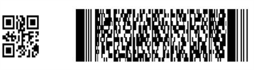

One-dimensional bar code that is bar code and empty arrangement rules, commonly used one-dimensional code system code include: EAN code, 39 yards, cross 25 yards, UPC code, 128 yards, 93 yards, ISBN code, and Codabar and so on. Bar code originated in the 20th century, 40's used in the 1970s, popular in the 80's. Barcode technology is a kind of automatic recognition technology which is widely used in computer, application and practice. It is widely used in commercial, postal, library management, storage industry production process control, transportation and so on. It has the advantages of fast input speed, high accuracy and cost Low reliability and other advantages, in today's automatic identification technology occupies an important position. Bar code is a set of rules arranged by the bar, empty and the corresponding character of the mark, "bar" refers to the low part of the light reflectivity, "empty" refers to the higher part of the light reflectivity, these bars and empty composition Of the data to express certain information, and can use a specific device to read, converted into computer-compatible binary and decimal information. Usually for each item, its coding is unique, for the ordinary one-dimensional bar code, but also through the database to establish a bar code and commodity information correspondence, when the bar code data spread to the computer, by the computer The application manipulates and processes the data. Therefore, the ordinary one-dimensional bar code in the course of the use of only as identification information, its meaning is through the computer system in the database to extract the corresponding information to achieve. One-dimensional bar code production is simple, coding code is more easily obtained by lawless elements and forged. Second, one-dimensional bar codes are almost impossible to represent Chinese characters and image information.
2. Two-dimensional bar code / two-dimensional code:
A bar code that stores information in two-dimensional space in the horizontal and vertical directions is called a two-dimensional bar code.
As with a one-dimensional bar code, the two-dimensional bar code also has many different coding methods, or code system. The coding principle of these codes, usually can be divided into the following three types
⒈ linear stacking two-dimensional code
It is based on the one-dimensional bar code coding principle, the number of one-dimensional code in the vertical stack generated. Typical code system such as: Code 16K, Code 49.PDF417 and so on.
2. Matrix two - dimensional code
It is encoded in a rectangular space by black and white pixels in different distributions in the matrix. Typical code systems such as: Aztec, Maxi Code, QR Code, Data Matrix and so on.
3. Post code
Encoded by different lengths of the bar, mainly for message encoding, such as: Postnet, BPO 4-State.
Among the many types of 2D barcodes, commonly used code systems are: Data Matrix, Maxi Code, Aztec, QR Code, Vericode, PDF417, Ultracode, Code 49, Code 16K, etc. Among them:
* The Data Matrix is primarily used for the identification of small parts in the electronics industry, such as the back of Intel's Pentium processor.
* Maxi Code was created by the United States United Parcel Service (UPS) for the sorting and tracking of parcels.
* Aztec Code is a product of Welch Allyn that can accommodate up to 3832 numbers or 3067 letters or 1914 bytes.

The software receive the barcode data by broadcast model by default, it can use left or right sides of the blue button to scan,it can also use the Scan button of interface to scan ,As the scan is completed,it can use the function of export data,it can export the information to a file, the path of the file:"sdcard/ScanCodeLogs"。